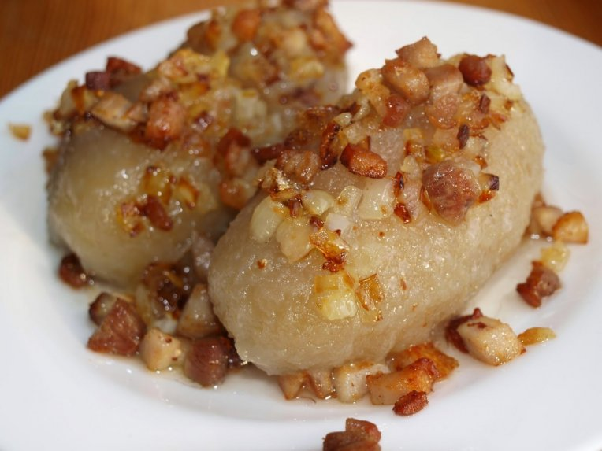

CEPELINAI BLET

DESCRIPTION
Didžkukuliai arba cepelinai – didžiuliai tarkuotų ir/arba grūstų virtų bulvių kukuliai su mėsos, varškės, džiovintų grybų ar kitokiu įdaru.
Pavadinimas cepelinai Lietuvoje prigijo nuo dirižablių gamintojo pavadinimo (vok. Zeppelin).[1] Toks pat patiekalas gaminamas ir Danijoje, Lenkijoje, Švedijoje, Norvegijoje, Gudijoje ir Ukrainoje.
INGREDIENTS
- 12 raw potatoes
- 3 Boiled potatoes
- little bit of salt
Stuffing:
- 500 grams of minced meat
- 1 onion
- little bit of black pepper
- little bit of salt
Sauce:
- 1 onion
- 2 spoons of lard
- little bit of bacon bits
- little bit of sour cream
PREPARATION
- Nuskustos bulvės sutarkuojamos ir nusunkiamos.
- Skystis neišpilamas, bet laukiama, kol nusės krakmolas. Tada skystis nupilamas, o krakmolas sudedamas į tarkius.
- Virtos bulvės sugrūdamos ir sumaišomos su žalių bulvių tarkiu, krakmolu, pasūdoma, gerai išminkoma.
- Įdarui pakepinamas smulkintas svogūnas. Malta mėsa maišoma su kepintu svogūnu, druska ir pipirais.
- Imama maždaug po 80 g tešlos, išplojama, uždedama įdaro, paplotis sulenkiamas, kraštai gerai užspaudžiami ir daromi pailgi kukuliai.
- Jie dedami į verdantį pasūdytą vandenį ir verdami 20 — 25 minutes, atsargiai pamaišant.
- Padažui riebaluose kelias minutes pakepinami spirgučiai, tuomet sudedami smulkinti svogūnai, pakepinami dar kelias minutes, tuomet supilama grietinė.
- Išgriebti iš vandens cepelinai sudedami į pašildytą pusdubenį ir užpilami padažu.